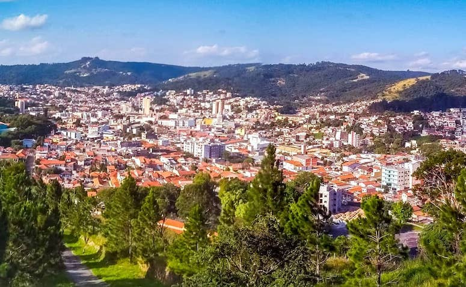

São Roque é um município brasileiro do estado de São Paulo, situado na Região Metropolitana de Sorocaba, na Mesorregião Macro Metropolitana Paulista e na Microrregião de Sorocaba. Localiza-se à latitude 23º31'45"Sul e à longitude 47º08'07" Oeste, com altitude de 771 metros
Curiosidades:
- Tem uma pista de Sky
- Possui um roteiro do vinho
- Tem um castelo medieval
- Possui platações de alcachofra